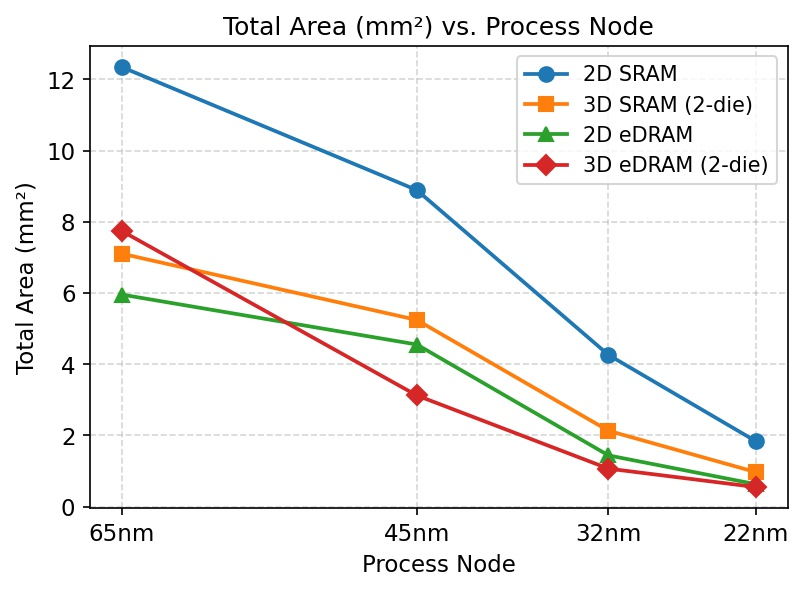
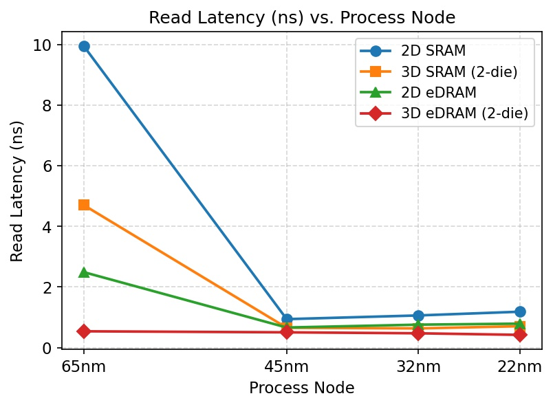
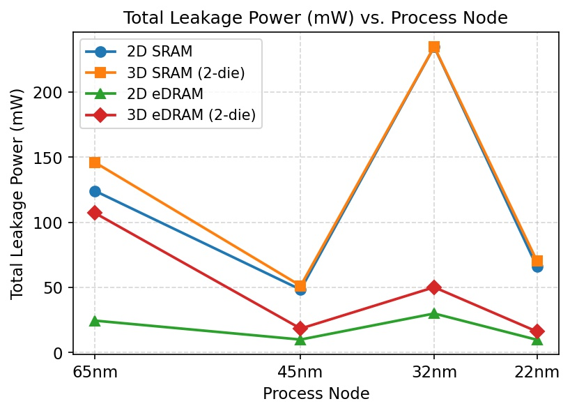
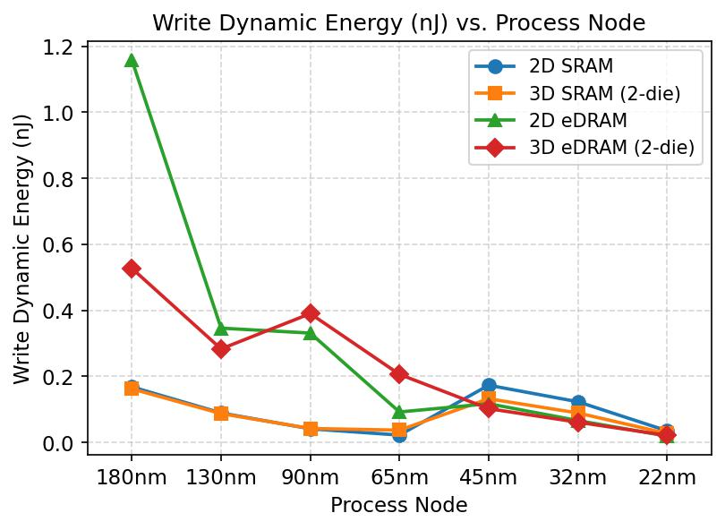
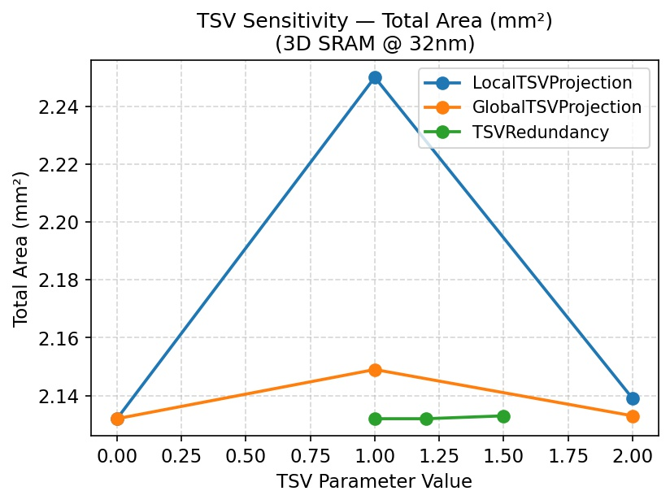

Three-dimensional die stacking promises to halve memory footprint through vertical integration, but the net benefit depends critically on process node, cell topology, and the TSV technology assumptions embedded in the design model. For an SRAM cache, 3D stacking consistently reduces per-die area because the 6T cell's large baseline absorbs TSV keep-out overhead. For eDRAM, whose compact 1T-1C cell already occupies less silicon, the same TSV overhead can increase total footprint at large feature sizes.
We use DESTINY's analytical cache model to address three questions across four memory technologies (planar and stacked variants of SRAM and eDRAM) and four process nodes (65, 45, 32, 22 nm):
All 22 runs share a strictly normalized baseline — only ProcessNode and
technology/stacking parameters vary — ensuring that observed differences reflect technology
choice rather than configuration artifacts.
At the representative 32 nm node, 3D eDRAM leads on three of four primary metrics; 2D eDRAM uniquely minimizes standby leakage. Both SRAM variants are leakage-penalized.
| Metric | 2D SRAM | 3D SRAM | 2D eDRAM | 3D eDRAM |
|---|---|---|---|---|
| Area (mm²) | 4.26 | 2.13 | 1.44 | 1.07 ✦ |
| Read latency (ns) | 1.06 | 0.63 | 0.76 | 0.47 ✦ |
| Write energy (nJ) | 0.123 | 0.089 | 0.066 | 0.061 ✦ |
| Leakage (mW) | 234.6 | 234.6 | 30.0 ✦ | 50.1 |
✦ best in row · red = optimizer-induced spike (see Anomalies) · eDRAM refresh energy not modeled





| TSV Parameter | Max Δ Area | Max Δ Write E. | Δ Read Latency |
|---|---|---|---|
| LocalTSVProjection (0→2) | +5.5% | +6.7% | 0% |
| GlobalTSVProjection (0→2) | +0.8% | +1.1% | 0% |
| TSVRedundancy (1.0→1.5) | <0.1% | +1.1% | 0% |